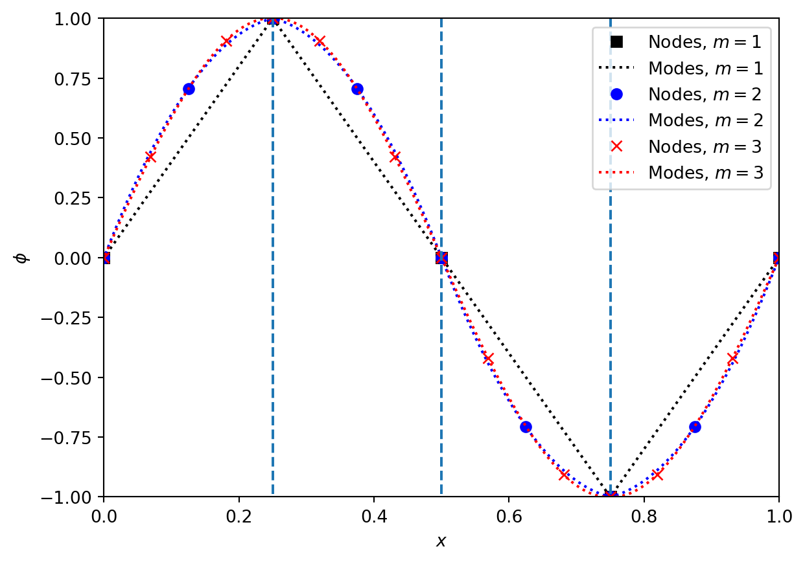
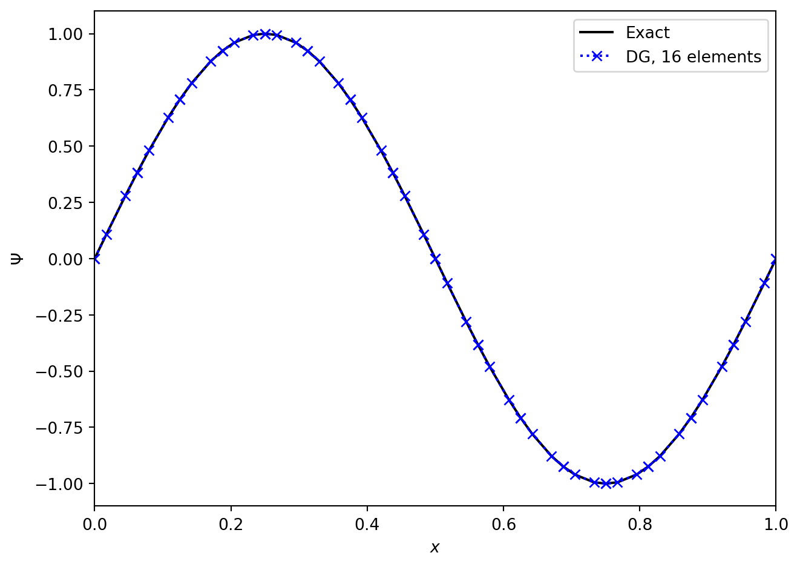
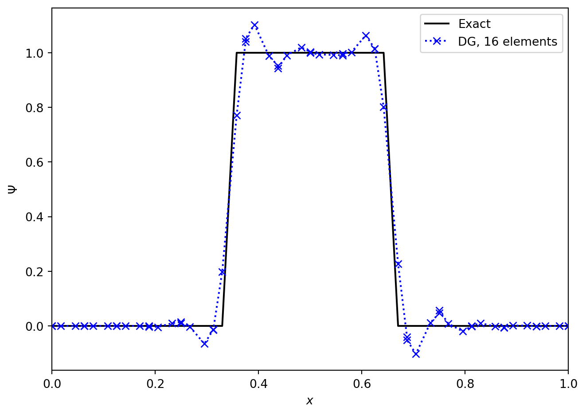
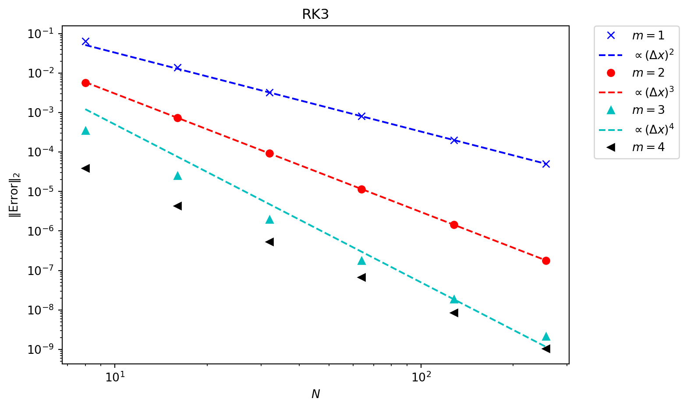
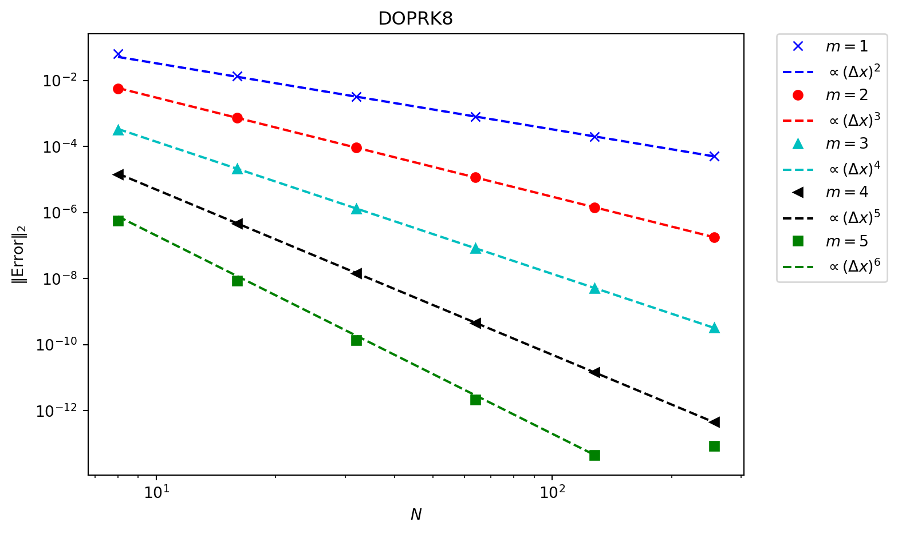

6 Flexibility with efficiency
In addition to the issues with higher order schemes noted above, there is one wasteful step that is worth noting. Each time a higher order scheme reconstructs the data it constructs a high-order piecewise polynomial representation of the data everywhere. Then, in the time update, most of this information is thrown away. At the beginning of each timestep we only know the value of the function (for finite difference approaches) or its integral average (for finite volume approaches).
Some alternative methods store the moments or modes of the solution, and update all of them. In these methods all of the information needed to evaluate the solution is available at all times and locations, and all the information is updated at every step. This should make the methods more efficient and more local (with a smaller stencil, and hence better on parallel machines). Their disadvantages will come in the timestep and with discontinuous data.
The presentation here closely follows (Hesthaven 2017) – check there for considerably more details, particularly on the theoretical results.
6.1 Function basis and weak form
Recall that in this chapter we are looking at the advection equation
\[ \Psi_t + u \Psi_x = 0. \tag{6.1}\]
We want to be able to compute the value of the function \(\Psi(t, x)\) at any point. We can do this by writing \(a\) in terms of a function basis \(\phi_n(t, x)\) as
\[ \Psi(t, x) = \sum_n \hat{\Psi}_n \phi_n(t, x). \tag{6.2}\]
Here the modes or modal coefficients \(\hat{\Psi}_n\) are constants. An example of a function basis would be
\[ \begin{aligned} \phi_{0}(t, x) &= 1, & \phi_{1}(t, x) &= x, & \phi_{2}(t, x) &= t, \\ \phi_{3}(t, x) &= \tfrac{1}{2} x^2, & \phi_{4}(t, x) &= \tfrac{1}{2} t^2, & \phi_{5}(t, x) &= x t. \end{aligned} \tag{6.3}\]
These six modes will perfectly describe any function that remains quadratic for all space and time.
Note that the function basis plays a very similar role to the shape functions discussed earlier for other finite element methods. The crucial distinctions here are that (a) the function basis is confined to a single element whilst a shape function is linked to a node and can be non-zero in multiple elements, and (b) shape functions are chosen so that the coefficients are directly linked to the values of the function at nodes, whilst basis functions are typically not normalized in that way.
It is often more convenient the explicitly separate space and time, as we saw using the semi-discrete approach in (Chapter 5). In this case we can represent the solution using a purely spatial function basis, as
\[ \Psi(t, x) = \sum_n \hat{\Psi}_n(t) \phi_n(x). \tag{6.4}\]
Now the modes depend on time, and there will only be three basis functions needed to describe quadratic data.
Clearly we cannot store an infinite number of modes. By restricting our sum to the \(m+1\) modes by writing
\[ \Psi(t, x) = \sum_{n=0}^{m} \hat{\Psi}_n(t) \phi_n(x) \tag{6.5}\]
we are restricting out solution to live in a finite dimensional function space (denoted \(\mathbb{V}\)) with basis \(\{ \phi_n \}, \ n = 0, \dots, m\). That means that, in general, any solution \(\Psi(t, x)\) will have an error when plugged into the advection equation. We can pick out a solution by insisting that this error is orthogonal to \(\mathbb{V}\).
To see how this works, write the error term as \(\epsilon(t, x)\). As our (infinite dimensional) function basis can describe any function, we expand the error in terms of the \(\phi_n\) as well, as
\[ \epsilon(t, x) = \sum_n \hat{\epsilon}_n(t) \phi_n(x). \tag{6.6}\]
Therefore our advection equation, including the error term, becomes
\[ \sum_n \left[ \left( \frac{\partial \hat{\Psi}_n}{\partial t} - \hat{\epsilon}_n \right) \phi_n(x) + u \hat{\Psi}_n \frac{\partial \phi_n}{\partial x}(x) \right] = 0. \tag{6.7}\]
As our solution is finite dimensional this can be written as
\[ \sum_{n=0}^{m} \left[ \frac{\partial \hat{\Psi}_n}{\partial t} \phi_n(x) + u \hat{\Psi}_n \frac{\partial \phi_n}{\partial x}(x) \right] = \sum_{n=m+1}^{\infty} \hat{\epsilon}_n \phi_n(x). \tag{6.8}\]
We have used here that the orthogonality of the error requires \(\hat{\epsilon}_n\) does not contribute for \(n = 0, \dots, m\). Using standard linear algebra techniques (as \(\phi_n\) is a basis), we can get individual equations by taking the inner product with another member of the basis. If we were dealing with vectors in \(\mathbb{R}^n\) then the inner product would be a vector dot product. As we are dealing with functions the inner product requires multiplication and integration over the domain,
\[ \langle f(x), \phi_l(x) \rangle = \int_V \text{d} x \, f(x) \phi_l(x). \tag{6.9}\]
This will also write the conservation law in the integral, weak, form. This leads to, after integrating by parts,
\[ \begin{split} \sum_{n=0}^{m} \left[ \frac{\partial \hat{\Psi}_n}{\partial t} \left( \int_V \text{d} x \ \phi_n(x) \phi_l(x) \right) + \int_{\partial V} u \hat{\Psi}_n \phi_n(x) \phi_l(x) - \right. \\ \left. u \hat{\Psi}_n \int_V \text{d} x \, \phi_n \frac{\partial \phi_l}{\partial x}(x) \right] = \sum_{n=m+1}^{\infty} \hat{\epsilon}_n \int_V \text{d} x\, \phi_n(x) \phi_l(x). \end{split} \tag{6.10}\]
Restricting ourselves to the first \(m+1\) modes we see only the left hand side contributes.
We can write this result as a matrix equation. Define the state vector
\[ \symbf{\hat{\Psi}} = (\hat{\Psi}_0, \dots, \hat{\Psi}_N)^T. \tag{6.11}\]
For now, restrict to one dimension and set \(V = [-1, 1]\): we can use a coordinate transformation to convert to other domains. Then define the matrices
\[ \begin{aligned} \hat{M}_{ln} &= \int_{-1}^1 \phi_l(x) \phi_n(x), \\ \hat{S}_{ln} &= \int_{-1}^1 \phi_l(x) \frac{\partial \phi_n}{\partial x}(x), \end{aligned} \tag{6.12}\]
which can be pre-calculated and stored for repeated use. These are typically referred to (building on finite element work) as the mass matrix (\(\hat{M}\)) and the stiffness matrix (\(\hat{S}\)). We therefore finally have
\[ \hat{M} \frac{\partial \symbf{\hat{\Psi}}}{\partial t} + \hat{S}^T \left( u \symbf{\hat{\Psi}} \right) = -\left[ \symbf{\phi} F \right]_{-1}^1. \tag{6.13}\]
The right hand side term is the boundary flux and requires coupling to neighbouring cells, or boundary conditions. It requires evaluating a product of basis functions \(\phi_l(x) \phi_n(x)\) at the boundary of the domain.
We see that, once we have evaluated the mass and stiffness matrices, we can then update all modes \(\symbf{\hat{\Psi}}\) by evaluating the boundary flux term on the right hand side and solving a linear system. This illustrates the small stencil of discontinuous Galerkin schemes: the only coupling to the other cells is through that boundary integral, which only couples to direct neighbours. However, if the flux terms couple different modes (as evaluating them requires evaluating a product of basis functions \(\phi_l(x) \phi_n(x)\)), then the amount of information communicated may still be large. Therefore the communication cost of the scheme is linked to the properties of the basis functions at the domain boundary.
We also see that the behaviour of the scheme will crucially depend on the mass matrix \(\hat{M}\). If it is singular the scheme cannot work. If it is poorly conditioned then the scheme will rapidly lose accuracy. Crucially, with the monomial basis of (Equation 6.3), the condition number of the mass matrix grows very rapidly, and the scheme loses accuracy for moderate \(m\).
The choice of whether to prioritize the behaviour of the mass matrix or the flux terms leads to two different schemes.
6.2 Modal Discontinuous Galerkin
If we prioritize the behaviour of the mass matrix as the most important starting point for our scheme we are led to the modal Discontinuous Galerkin approach. We noted above that the choice of a monomial basis led to a poorly conditioned mass matrix. Instead, it is sensible to pick as a function basis something from the class of orthogonal polynomials, where
\[ \int_V w(x) \phi_l(x) \phi_n(x) \propto \delta_{ln}. \tag{6.14}\]
The Kronecker delta \(\delta_{ln}\) ensures that the mass matrix is diagonal, and hence always easy to invert. When the weight function \(w(x)\) is identically \(1\), as needed for the mass matrix in (Equation 6.12), this suggests we should use the Legendre polynomials \(\phi_n(x) = P_n(x)\), which obey
\[ \int_{-1}^1 P_l(x) P_n(x) = \frac{2}{2 n + 1} \delta_{ln}. \tag{6.15}\]
A further simplification comes from choosing the normalized Legendre polynomials
\[ \tilde{P}_n(x) = \sqrt{\frac{2 n + 1}{2}} P_n(x) \tag{6.16}\]
which ensures that the mass matrix \(\hat{M}\) is the identity matrix.
Now that we have fixed a choice of basis functions we can evaluate the mass matrix (which will be the identity here) and the stiffness matrix \(\hat{S}\). We still need to evaluate the boundary flux. If we explicitly write out equation (Equation 6.13) in index form (using Einstein summation convention over \(n\)) we have
\[ \hat{M}_{ln} \frac{\partial \hat{\Psi}_n}{\partial t} + \hat{S}^T_{ln} u \hat{\Psi}_n = -\left[ u P_l(x) P_n(x) \hat{\Psi}_n \right]_{-1}^1. \tag{6.17}\]
We can now directly use that \(P_n(1) = 1\) and \(P_n(-1) = (-1)^n\) to get the boundary flux term as
\[ -\left[ u P_l(x) P_n(x) \hat{\Psi}_n \right]_{-1}^1 = u \left\{ (-1)^{l+n} \Psi_n(-1) - \Psi_n(1) \right\}. \tag{6.18}\]
Here \(\Psi_n(1)\), for example, is the \(n^{\text{th}}\) mode of the solution at the boundary. As there are two solutions at the boundary of the element - the solution at \(x = 1_{-}\) from the interior of the element, and the solution at \(x = 1_{+}\) from the exterior (either another element, or from the boundary conditions), we need a Riemann solver to give us a single solution at \(x=1\). In the case of linear advection, as here, we can use the upwind solver for the modes as well as for the solution, so
\[ \Psi_n(x; \Psi^{-}_n, \Psi^{+}_n) = \begin{cases} \Psi^{-}_n & \text{if } u \ge 0 \\ \Psi^{+}_n & \text{otherwise.} \end{cases} \tag{6.19}\]
Two points should be immediately noted about this discontinuous Galerkin method. First, if we restrict to only one mode (\(N=0\)), then the only basis function we have is \(\tilde{P}_0(x) = 1 / \sqrt{2}\), the mass matrix \(\hat{M} = 1\), the stiffness matrix vanishes, and the boundary flux term reduces to the standard finite volume update. In general, the zero mode corresponds to the integral average over the cell or element.
Second, we note that the boundary flux term always couples different modes (when including more than just one), and only in the linear case will it be simple to give a flux formula that works for all modes. As the boundary flux term is crucial in many cases, we need to change approach to simplify the calculation of this term using (possibly approximate) solutions to the Riemann problem.
6.3 Nodal Discontinuous Galerkin
A problem with the modal form used above is with the boundary flux term. The solution (for nonlinear equations) of the flux for higher order modes is complex. The mode coupling at the boundary also means the amount of information communicated could be large, meaning the scheme is not as efficient as it could be. Instead we note that in standard finite volume schemes we need the value of the function either side of the interface. This suggests that, rather than using a modal expansion as above, we should use a nodal expansion where the values of the functions are known at particular points. If two of those points are at the boundaries of the cell then those values can be used to compute the flux.
Let us denote these nodal locations by \(\xi_i\), and the values of the solution at these locations by \(\Psi_i\). We therefore have our solution in the form
\[ \Psi(t, x) = \sum_{i=0}^m \Psi_i(t) \ell_i(x) \tag{6.20}\]
where the \(\ell_i(x)\) are the standard indicator interpolating polynomials that obey
\[ \ell_i(\xi_j) = \delta_{ij}. \tag{6.21}\]
This directly matches the modal form of the solution from (Equation 6.5),
\[ \Psi(t, x) = \sum_n \hat{\Psi}_n(t) \phi_n(x), \tag{6.22}\]
with the basis functions \(\phi_n\) being the indicator polynomials \(\ell_n\). We immediately see that the boundary flux term will simplify hugely, as the only term that is non-zero at \(x=-1\) comes from the product of \(\ell_0(-1) \ell_0(-1)\), using the convention that \(\xi_0 = -1\), as \(\ell_n(-1) = 0\) for \(n \ne 0\). Similarly the only term that is non-zero at \(x=+1\) comes from the product of \(\ell_m(-1) \ell_m(-1)\). Therefore, for any number of modes \(m\), we only need to communicate one piece of information from the neighbouring element in order to solve the Riemann problem, and this is the value of the solution at that interface.
However, by choosing as a basis the indicator polynomials \(\ell_n(x)\), the resulting mass matrix will not be the identity, as the indicator polynomials are not orthogonal. The properties of the mass matrix will now crucially depend on how we choose the locations of the nodes, \(\xi_i\). This is most easily done by linking the nodal form of (Equation 6.20) to the modal form (Equation 6.5), where here we are thinking of \(\phi_n\) as being a different basis (\(\phi_n \ne \ell_n\)) which is known to be well behaved. This implicitly allows us to restrict \(\xi_j\).
By evaluating both forms at a node \(\xi_j\) we get
\[ \Psi_j = \sum_n \phi_n(\xi_j) \hat{\Psi}_n. \tag{6.23}\]
By defining a (generalized) Vandermonde matrix \(\hat{V}\) as
\[ \hat{V}_{jn} = \phi_n(\xi_j) \tag{6.24}\]
we see that we can translate from the modal state vector \(\symbf{\hat{\Psi}} = (\hat{\Psi}_0, \dots, \hat{\Psi}_N)^T\) to the nodal state vector \(\symbf{\Psi} = (\Psi_0, \dots, \Psi_N)^T\) via the matrix equation
\[ \hat{V} \symbf{\hat{\Psi}} = \symbf{\Psi}. \tag{6.25}\]
We can also connect the basis functions \(\phi_n\) to the interpolating polynomials \(\ell_i\) via the Vandermonde matrix. Note that
\[ \begin{aligned} && \Psi(t, x) &= \sum_n \hat{\Psi}_n \phi_n(x) \\ && &= \sum_i \Psi_i \ell_i(x) \\ && &= \sum_i \sum_n \hat{V}_{in} \hat{\Psi}_n \ell_i(x) \\ && &= \sum_n \sum_i \hat{V}_{in} \hat{\Psi}_n \ell_i(x) \\ \implies && 0 &= \sum_n \hat{\Psi}_n \left( \sum_i \left[ \hat{V}_{in} \ell_i(x) - \phi_n(x) \right] \right). \end{aligned} \tag{6.26}\]
This immediately gives
\[ \hat{V}_{in} \ell_i(x) = \phi_n(x) \tag{6.27}\]
or, by thinking of the basis functions and interpolating polynomials as vectors,
\[ \hat{V}^T \symbf{\ell}(x) = \symbf{\phi}(x). \tag{6.28}\]
This allows us to convert the modal approach to deriving a scheme to a nodal approach directly through the Vandermonde matrix.
To construct the nodal scheme we need to fix the location of the nodal points. We have constructed the modal scheme to be well conditioned by looking at the mass matrix. This suggests that to make the nodal scheme well behaved we should ensure good conditioning of the Vandermonde matrix. This requires carefully choosing the nodes \(\xi_i\). We also want to ensure that two of the nodes are at \(x = \pm 1\), and that the accuracy of the scheme is as good as possible. All these conditions combine to suggest that the nodes \(\xi_i\) should be given by the points, which are the zeros of \(P_N'(x)\) combined with \(\pm 1\).
Figure (Figure 6.1) shows the nodes and modes for a sine wave represented by a Discontinuous Galerkin method on a grid with only \(4\) cells. We see how rapidly the representation appears to converge to the smooth sine wave with increasing \(m\). Note also how the locations of the nodes varies with \(m\), as the optimal nodes changes with the order of the method. However, in all cases there are nodes at the boundaries of each cell.
Exercise 6.1 Construct the Vandermonde matrix converting modal coefficients, based on orthonormal Legendre polynomials, to nodal coefficients, based on Gauss-Lobatto nodal points, on the interval \(x \in [-1, 1]\). For example, for \(m=2\) the result is, to \(4\) significant figures,
\[ V = \begin{pmatrix} 0.7071 & -1.225 & 1.581 \\ 0.7071 & 0 & -0.7906 \\ 0.7071 & 1.225 & 1.581 \end{pmatrix}. \tag{6.29}\]
Using the Vandermonde matrix and its inverse, check that you can convert from nodes to modes and vice versa. Check that the condition number grows slowly with \(m\) (roughly as \(m^{1/2}\) for large \(m\)).
With these restrictions, we can now construct the nodal scheme. As noted above, this scheme remains a modal scheme as generally introduced in (Section 6.1), but the basis functions are the indicator polynomials \(\ell_n(x)\). Thus the scheme can be written in the mass matrix form as in (Equation 6.13) of
\[ \hat{M} \frac{\partial \symbf{\hat{\Psi}}}{\partial t} + \hat{S}^T u \symbf{\hat{\Psi}} = -\left[ \symbf{\phi F} \right]_{-1}^1, \tag{6.30}\]
but now the two matrices are given by
\[ \begin{aligned} \hat{M}_{ln} &= \int_{-1}^1 \ell_l(x) \ell_n(x), \\ \hat{S}_{ln} &= \int_{-1}^1 \ell_l(x) \frac{\partial \ell_n}{\partial x}(x). \end{aligned} \tag{6.31}\]
By using the Vandermonde matrix to link the nodal basis to an orthogonal basis such as the Legendre polynomials we can simplify the mass matrix to
\[ \hat{M} = \left( \hat{V} \hat{V}^T \right)^{-1}. \tag{6.32}\]
The stiffness matrix can also be simplified, by re-writing \(\frac{\partial \ell_n}{\partial x}(x)\) as an expansion in terms of \(\ell_n(x)\). Defining the differentiation matrix \(\hat{D}\) as
\[ \hat{D}_{ln} = \left. \frac{\partial \ell_n}{\partial x}(x) \right|_{x = \xi_l} \tag{6.33}\]
we have \(\frac{\partial \ell_n}{\partial x}(x) = \sum_k \hat{D}_{kn} \ell_k(x)\)
\[ \begin{aligned} \hat{S}_{ln} &= \int_{-1}^1 \ell_l(x) \frac{\partial \ell_n}{\partial x}(x) \\ &= \int_{-1}^1 \ell_l(x) \sum_k \hat{D}_{kn} \ell_k(x) \\ &= \sum_k \left( \ell_l(x) \ell_k(x) \right) \hat{D}_{kn} \\ &= \hat{M}_{lk} \hat{D}_kn. \end{aligned} \tag{6.34}\]
This shows that the stiffness matrix simplifies to
\[ \hat{S} = \hat{M} \hat{D}. \tag{6.35}\]
Finally, using similar methods to the steps above, we can link the differentiation matrix back to the Vandermonde matrix, via
\[ \hat{D} = \left( \frac{\partial V}{\partial x} \right) \hat{V}^{-1}. \tag{6.36}\]
This is primarily useful when the modal function basis is a standard library function such as the (normalized) Legendre polynomials. This means that the basis functions and their derivatives, and hence the Vandermonde matrix and its derivatives, can be written solely in terms of library functions. For example, in Python the package contains (in ) the functions (which evaluates the Legendre polynomials), (which links the derivatives of the Legendre polynomials back to the Legendre polynomials themselves), and (which evaluates the Vandermonde matrix directly, but in un-normalized form).
There is one final step needed to construct the full scheme. So far, the method has been built assuming a single element with the coordinates \(x \in [-1, 1]\). For most cases we will want to use a “small” number of modes, say \(m \le 5\), and split the domain into \(N\) elements, like the cells in a finite volume scheme. If we assume a general element has coordinates \(x \in [x_{j-1/2}, x_{j+1/2}]\) with width \(\Delta x\), then the form of the scheme remains the same:
\[ M \frac{\partial \symbf{\hat{\Psi}}}{\partial t} + S^T u \symbf{\hat{\Psi}} = -\left[ \symbf{\phi} F \right]_{x_{j-1/2}}^{x_{j+1/2}}. \tag{6.37}\]
However, the change of coordinates needs to be factored in. We can see how this works by looking at the integral definitions, such as (Equation 6.31). We see that the mass matrix transforms as
\[ M = \frac{\Delta x}{2} \hat{M}, \tag{6.38}\]
but that the stiffness matrix is unchanged.
Exercise 6.2 From the Vandermonde matrices constructed above, build the mass, differentiation and stiffness matrices \(\hat{M}, \hat{D}, \hat{S}\), on the interval \(x \in [-1, 1]\). For example, for \(m=2\) the results are, to \(4\) significant figures,
\[ \begin{aligned} \hat{M} &= \begin{pmatrix} 0.2667 & 0.1333 & -0.0667 \\ 0.1333 & 1.067 & 0.1333 \\ -0.06667 & 0.1333 & 0.2667 \end{pmatrix}, \\ \hat{D} &= \begin{pmatrix} -1.5 & 2 & -0.5 \\ -0.5 & 0 & 0.5 \\ 0.5 & -2 & 1.5 \end{pmatrix}, \\ \hat{S} &= \begin{pmatrix} -0.5 & 0.6667 & -1.667 \\ -0.6667 & 0 & 0.6667 \\ 1.667 & -0.6667 & 0.5 \end{pmatrix}. \end{aligned} \tag{6.39}\]


By combining the nodal DG update described above with a time integrator we can look at the performance of the scheme. We need to take care in choosing the timestep. From the nodal point of view we can see that the width of the cell, \(\Delta x\), is not going to be the limiting factor. Instead, the smallest distance between the (unequally spaced!) nodes is going to be crucial. General results (see e.g. (Hesthaven 2017)) suggest that reducing the timestep by a factor of \(2 m + 1\) is sufficient to ensure stability, but it does increase computational cost.
Figures (Figure 6.2) and (Figure 6.3) show the advection of two initial profiles one period around a periodic domain. In (Figure 6.2) we see the excellent performance when applied to a smooth profile. The method is essentially indistinguishable from the exact solution. However, in (Figure 6.3), we see that when the method is applied to a discontinuous initial profile then Gibbs oscillations result. The only “nice” feature of the Discontinuous Galerkin method here is that these oscillations are confined to the elements next to the discontinuities, and do not spread to cover the entire grid.
As with finite difference schemes, there are a range of modifications that can be made to limit or eliminate these oscillations. In Discontinuous Galerkin methods it is typical to do this in two steps: first, identify which elements need limiting, and second, modify the data in the required cells. The identification step can be done using the nodal values: construct limited slopes from cell average values and compare the predicted values at cell boundaries to the nodal values actually stored. The modification step can be done in many ways. A number are outlined in (Hesthaven 2017).

With smooth solutions we can check the convergence rate of the method. In (Figure 6.4) the smooth sine profile is again advected once around a periodic domain, using mode numbers \(m = 1, \dots, 4\), and checking convergence with the number of elements. This using a third order Runge Kutta method in time, and eventually the time integration error dominates over the spatial error.
/Users/ih3/anaconda3/envs/mfc/lib/python3.12/site-packages/scipy/integrate/_ode.py:431: UserWarning: dop853: step size becomes too small
self._y, self.t = mth(self.f, self.jac or (lambda: None),

In (Figure 6.5) an \(8^{\text{th}}\) order time integrator is used. This reduces the time integrator error far below what is needed, and we now see that every scheme converges at the expected rate. In more complex systems in multiple dimensions the error from the spatial terms will be much larger, and so lower order methods can be used without compromising the accuracy.
Exercise 6.3 Write a Python code to advect a profile around \(x \in [0, 1]\) using the Discontinuous Galerkin method. A variety of Python packages can be used to facilitate this: numpy will solve linear systems and construct the matrices linked to Legendre polynomials, scipy.integrate will solve the ODE in time, and quadpy will construct the Gauss-Lobatto integration points.
Check that the solution converges as expected.
6.4 Discussion
In some ways Discontinuous Galerkin type methods seem a half-way-house between spectral methods and finite difference or finite volume methods. In principle the number of modes used within each element can be increased arbitrarily, giving the extremely rapid convergence of a spectral method. However, each element is linked to its neighbour, so there is still the communication with neighbouring points as in, for example, finite difference methods.
The key advantage of Discontinuous Galerkin methods comes with the latest computing hardware. These “Exascale” High Performance machines will rely on codes using very large numbers of relatively cheap, energy efficient individual computing cores (nearly always GPUs). This means the calculation must be performed in parallel across millions (or more) different compute cores. In this situation the limiting factor will be the communication with neighbouring points. This makes pure spectral methods totally impractical, and high accuracy finite difference methods (that have to communicate with many neighbours) will also not reach the performance expectations. As Discontinuous Galerkin methods only have to compute with one neighbouring element on each side, they minimise communication whilst giving high accuracy.
However, the stiffness and mass matrices involved in the update grow rapidly with the number of spatial dimensions and with the size of the system to solve. In addition, simple Discontinuous Galerkin methods struggle with steep gradients and discontinuities. The complexity and cost of making these methods practical means that they are - as yet - rarely used. Future computing hardware considerations may make them increasingly important.